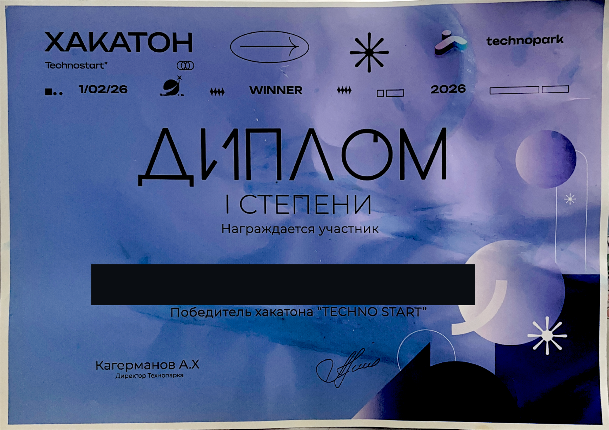

Открыть демо
Открыть демоBALCON
ДемоконцептАтмосфера ресторана — ещё до первого визита. Тёмная палитра, медные акценты, интерактивное меню, галерея и демонстрационное бронирование.
WEB DESIGN / JAVASCRIPT / MOTION
Привет, я cybermogger
Выразительные сайты, интерактивные миры
и системы, превращающие данные в смысл.
SELECTED WORK
От атмосферных сайтов до интерфейсов,
которыми управляешь движением руки.
Открыть демоАтмосфера ресторана — ещё до первого визита. Тёмная палитра, медные акценты, интерактивное меню, галерея и демонстрационное бронирование.
 Открыть демо
Открыть демоСайт с характером. Контрастная типографика, чёрно-белая фотография, лаймовые акценты, фильтрация галереи и интерактивный выбор услуги.
Музейный стенд: сравнивай прошлое и настоящее жестами руки. Щипок открывает исторический кадр, движение двух рук переключает места. Предусмотрено резервное управление.
Интерактивная вайнахская башня: разбор на части, поэтапная сборка и рентген-режим. Геометрия и кладка создаются программно. Для конкурса «Здесь моя Родина».
Два учебных направления, семь модулей, практика с проверкой ответов, прогресс и AI-наставник. Python запускается прямо в браузере.
Потоки данных нескольких бирж, события, локальная панель и Telegram. Исследование моделей и виртуальный портфель; система не размещает ордера.
BALCON и CUTHEADS — независимые демоконцепты для портфолио, без заявленного заказа со стороны брендов. Графические обложки остальных кейсов — визуальные интерпретации проектов.
PROOF, NOT PROMISES
Диплом I степени победителя TECHNO START. Командный проект сравнивает спутниковые снимки Земли и выявляет изменения и аномалии: вырубку леса, свалки и пожары.

TECHNO START · WINNER · 2026HOW I BUILD
Мне интересны проекты на стыке визуального опыта и технологии. Где интерфейс помогает исследовать, данные дают контекст, а детали создают характер.
Типографика, композиция и движение складываются в цельный образ. У каждого проекта — собственное настроение.
Жесты, 3D, фильтры и анимация помогают взаимодействовать с продуктом и понимать его.
Адаптация под телефон, резервные сценарии управления и проверки ключевых действий.
LET’S MAKE SOMETHING MATTER